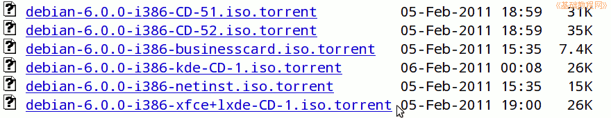
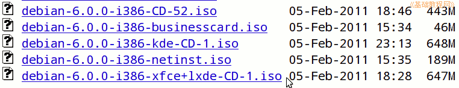
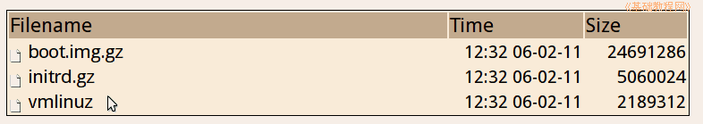

Debian 安装基础教程
作者：TeliuTe 来源：基础教程网
一、安装准备 返回目录 下一课安装前先规划一下，怎么安装，装在哪个分区；
1、下载镜像
1）官方下载：http://cdimage.debian.org/debian-cd/current/i386/iso-cd/
BT 下载：http://cdimage.debian.org/debian-cd/current/i386/bt-cd/
2）只需下载第一张即可，找到 debian-6.0.0-i386-xfce+lxde-CD-1.iso 点击下载，这个带轻巧的桌面，DVD 镜像可以向上一级查找；


3）下载好以后可以刻成光碟，然后用光盘安装，
也可以用硬盘安装，下载grub4dos、和两个硬盘启动文件：http://ftp.nl.debian.org/debian/dists/squeeze/main/installer-i386/current/images/hd-media/

2、准备分区
1）如果是新硬盘，只装 Debian，只需规划好分哪几个区，每个区的大小，一般来说最少要5G，个人用推荐10G；
2）如果是双系统安装，则可以在后面腾出一个分区来，在安装的过程中，对这个分区重新分割，参考：http://teliute.org/linux/Ubsetup/lesson2/lesson2.html
3）安装过程中会将这个分区里的数据清空，因此请提前备份到别的分区，并记住分区的大小和排列顺序；
本节学习了准备安装的基础知识，如果你成功地完成了练习，请继续学习下一课内容；
本教程由86团学校TeliuTe制作|著作权所有
基础教程网：http://teliute.org/
美丽的校园……
转载和引用本站内容，请保留版权信息和本站链接。